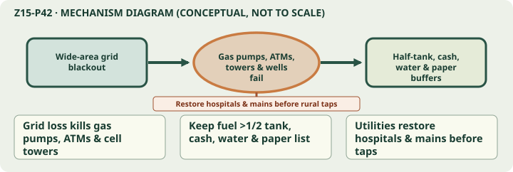

Z15-P42 · Disaster scenarios · New manuscript
Anticipate cascading infrastructure failures during prolonged grid blackouts
Prepare realistically for how a single wide-area electrical blackout disables fuel pumps, payment networks, water pressure, and communications simultaneously.
When it applies · Regional ice storms, derechos, severe heat-wave blackouts, or multi-day utility transmission failures.
Equipment · Pre-outage cash, ≥half-tank vehicle fuel, stored drinking water, NOAA/AM-FM radio, and paper contact/medication binder.

Actions
- Map the cascading chain BEFORE storms hit: when regional power drops, gas-station fuel pumps stop, ATMs and credit-card terminals go offline, cell-tower backup batteries drain within hours to a day, elevators and residential well/septic pumps stop, and municipal water pressure may drop triggering Boil Water notices.[D11, U01, U16]
- Build simple everyday habits that buffer cascading failures automatically: keep vehicle fuel above HALF-TANK year-round, maintain small-denomination cash, keep stored potable water and FIFO pantry food ready, and store critical phone numbers and medication lists on paper.[D11, D16, W14]
- Understand utility restoration order realistically: crews clear life-threatening downed wires first, then restore high-voltage transmission lines, substations, hospitals/water plants, main feeders, and finally isolated residential tap lines—so individual rural or side-street homes can wait days longer than downtown corridors.[D11]
Failure recognition · Waiting until a regional derecho cuts power across five counties to drive on an empty gas tank to an ATM and grocery store.[D11, D16]
Verify · Confirm half-tank fuel habit, small cash staged, stored water independent of electric pumps, and paper contact binder ready.[D11, D16, U08]
Stop or change course · Cascading utility losses combining dead heat/cooling, lost water, and failing medical power trigger early relocation outside the affected grid zone.[D11, U17]
Evidence and editorial notes
- D11 · FEMA / Ready.gov · Power Outages (current web edition)
- Section: Extended Electrical Outages and Cascading Infrastructure Failure · Conditions: Multi-day grid outages disrupting water pumps, fuel stations, ATMs, and telecoms
Support: Recognize cascading grid dependencies: gas station pumps, payment terminals, cell towers, elevators, municipal booster pumps, and medical devices all lose function during prolonged blackouts—maintain cash, vehicle fuel above half-tank, paper contacts, and backup power before storms.
Limitations: Restoring high-voltage transmission and distribution lines follows critical-infrastructure priority order, not first-reported order. · Conflicting evidence: None; anchors cascading-failure scenario planning in Z15.
Editorial note: Drives cascading infrastructure failure and 30-day resilience cards. · Specialist reviewer: Critical infrastructure and emergency management
Primary source · checked 2026-11-24 - D16 · FEMA / Ready.gov · Financial Preparedness and Vital Records (current web edition)
- Section: Vital Documents, Cash Reserves, Insurance, and Post-Disaster Recovery · Conditions: 30-day resilience planning and post-disaster household recovery
Support: Keep waterproof physical and encrypted offline digital copies of IDs, medical lists, prescriptions, insurance policies, deeds, and emergency contacts alongside small-denomination cash so household transactions and assistance claims survive bank/internet outages.
Limitations: Online-only cloud portals are inaccessible during power and telecom outages. · Conflicting evidence: None; critical pillar of prolonged 30-day household resilience.
Editorial note: Grounds documentation, cash liquidity, and recovery staging cards. · Specialist reviewer: Emergency management and household continuity
Primary source · checked 2026-11-24 - U01 · FEMA / Ready.gov · Power Outages (current web edition)
- Section: Power Outages > Preparing and Responding Safely · Conditions: Residential utility electrical outages of hours to days
Support: Keep phones/medical batteries charged, maintain flashlights instead of candles, unplug sensitive appliances to protect against restoration surges, and verify backup power plans for electrically dependent medical devices.
Limitations: Home outage durations vary widely by grid damage; extended winter outages require heat/evacuation contingencies. · Conflicting evidence: None; aligns with CPSC and NFPA.
Editorial note: Establishes household outage baseline and medical-power priority in Z13. · Specialist reviewer: Emergency management and electrical safety
Primary source · checked 2026-11-24 - U08 · FEMA / Ready.gov · Water Storage and Emergency Supply (current web edition)
- Section: Water > Emergency Household Supply, Shutoff, and Alternate Indoor Sources · Conditions: Household plumbing disruptions, water-main breaks, or winter freeze outages
Support: Store at least 1 gallon per person per day for several days (two weeks where feasible for extended outages), know the main water shutoff valve location, and recognize clean indoor water-heater reserve boundaries only after shutting off power/gas and confirming supply safety.
Limitations: Never use water from radiators, hot-water boilers, or chemically treated toilet tanks for drinking. · Conflicting evidence: None; complements CDC-S (W06, W14).
Editorial note: Covers household water shutoffs, pipe-freeze prevention, and safe indoor reserves. · Specialist reviewer: Plumbing safety and drinking-water public health
Primary source · checked 2026-11-24 - U16 · FEMA / Ready.gov · Emergency Alerts (current web edition)
- Section: Household Emergency Communications During Grid and Cell Outages · Conditions: Residential power, internet, and cellular tower disruptions
Support: Maintain a battery/crank NOAA Weather Radio, spare power banks, car-charger backups, written contact cards, and local AM/FM broadcast station lists so warnings and utility restoration updates remain accessible without Wi-Fi or cell data.
Limitations: Cordless landline handsets and VoIP routers fail immediately when house power drops unless separately backed up. · Conflicting evidence: None; links Z13 household comms to Z15 disaster alerts.
Editorial note: Grounds home communications continuity during extended blackouts. · Specialist reviewer: Emergency communications specialist
Primary source · checked 2026-11-24 - U17 · FEMA / Ready.gov · Evacuation (current web edition)
- Section: Household Evacuation Thresholds When Utilities Fail · Conditions: Uninhabitable indoor temperatures, sewage backup, persistent CO alarm, or structural/utility hazard
Support: Establish clear pre-agreed exit triggers to relocate to a warming center, hotel, or relatives BEFORE indoor freezing, carbon monoxide alarms, medical-device battery exhaustion, or impassable blizzard roads trap occupants.
Limitations: Waiting until indoor pipes burst or batteries hit zero removes safe travel options. · Conflicting evidence: None; aligns with T13 and E14.
Editorial note: Defines objective household abandonment thresholds in Z13. · Specialist reviewer: Emergency management and cold-weather operations
Primary source · checked 2026-11-24 - W14 · CDC · How to Create an Emergency Water Supply (current web edition)
- Section: How Much Water to Store; Rotation · Conditions: Household emergency water reserve planning
Support: Plan at least 1 gallon per person per day for at least 3 days (more for heat, illness, pregnancy, or pets); rotate self-filled water every 6 months.
Limitations: Backcountry active travel demands vary sharply by exertion, temperature, and humidity. · Conflicting evidence: None; household baseline is cited only as a planning floor, not a physiological maximum.
Editorial note: Distinguishes household storage floors from active field hydration demands. · Specialist reviewer: Household preparedness and drinking-water safety
Primary source · checked 2026-11-24
Source lineage · FEMA Ready.gov Power Outages; new manuscript · Classification · New manuscript.